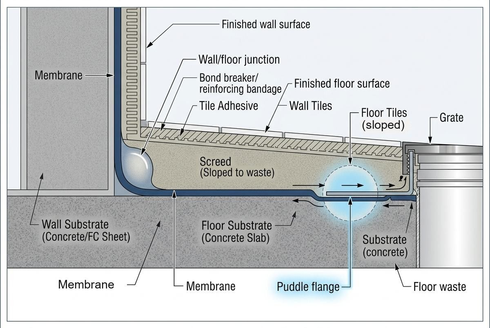

Bathroom Strip Out in Canberra
- Free, no-obligation quotes
- Straight answers on what a job actually needs
- Serving Canberra, the ACT and Queanbeyan

"Strip out" is one of the least precise words in a bathroom quote. It can mean the tiles off the shower walls, or every tile, screed bed and membrane in the room down to the slab or the joists. Two quotes for a bathroom strip out can be describing completely different jobs.
It is also the point where a bathroom stops being a plan and becomes what is actually there. Nobody knows what is under the tiles until they come off, and what is found decides what the rest of the job costs.
This page covers what a strip out includes, what is usually found underneath, and how to make sure two quotes are describing the same work.
Strip out, or renovation?
Worth settling first, because it decides who you should be calling.
A strip out ahead of retiling takes the tiled surfaces back to a sound substrate so the room can be rewaterproofed and retiled in the same layout. The shower stays where it is, the vanity goes back where it was. That is tiling work, and it is the job this page is about.
A strip back to the studs with the layout changing, walls being resheeted, the plumbing moving and new electrical going in is a renovation. That involves plumbing, electrical, carpentry, plastering and painting, and it is generally run by a builder rather than a tiler. If that is your job, a renovation builder is who you want, and we will say so rather than take the enquiry.
Plenty of jobs sit in between, which is why the scope needs writing down rather than assuming.
What a bathroom strip out can include

A tiled wet area is built in layers, and a strip out can stop at any of them. From the surface down:
- Fixtures. Vanity, toilet, shower screen, bath, mirrors, accessories. These have to come out before any tile does.
- Wall tiles and adhesive. On rendered or masonry walls the tiles usually come off leaving adhesive behind. On sheeted walls they frequently take the sheeting with them.
- Floor tiles and adhesive. Often the slowest part, because the adhesive bed has to be ground or scraped back before anything new goes down.
- Screed. The mortar bed that sets the fall to the floor waste. If the falls are wrong, or the membrane under the screed has failed, the screed has to come out too.
- The old membrane. Under the screed, under the wall tiles in the shower, and up the walls at the junctions. If a leak is the reason for the job, this is the layer that has failed.
- Wall sheeting. Only where it came away with the tiles or is damaged by water. Replacing it is carpentry, not tiling.
A quote that says "strip out bathroom" without saying which of these layers is included, and whether the room ends up ready to waterproof, is not a scope. Ask which layers are coming out and what condition the room is left in.
What is found underneath
This is why strip out quotes carry allowances, and why the honest ones say so.
A failed membrane, or none at all. In an older bathroom it is common to find the waterproofing has broken down, was never continuous, or was not bonded to the floor waste. Damp screed and staining around the waste are the usual signs. See leaking shower repair.
Water damaged timber. Older Canberra houses through the inner north and inner south are more likely to have suspended timber floors under the bathroom. If the timber has been wet long enough to soften, the job stops being a tiling job and becomes a structural one, and a carpenter or builder needs to see it before anything goes back on top.
Floors that are not flat or do not fall. Unknown until the old surface is off, and frequently the largest single line on the job. Screeding and levelling run around $15 to $30 per square metre.
Sheeting that comes away with the tiles. Tiles bonded to wall sheeting often pull its face off. The wall is then replaced rather than patched.
Previous repairs. Sealers, patched grout, tiles laid over tiles. Each one has to come off, and a bathroom that has been repaired more than once is telling you something about what is underneath.
Asbestos in older Canberra bathrooms
WorkSafe ACT's guidance is that a residential building constructed or refurbished before 1990 is likely to contain asbestos containing material. In a bathroom the likely places are fibre cement wall sheeting behind the tiles, fibre cement floor sheeting under them, and some older tile adhesives. Fibre cement sheeting is common in Canberra stock from the 1960s to the 1980s.
In the ACT only a licensed asbestos assessor can identify or test suspected material, and only a licensed asbestos removalist can remove it from a residential premises, with no small-quantity exemption for DIY. In a pre-1990 bathroom, identification comes before the first tile comes off, not after.
WorkSafe ACT, Asbestos; WorkSafe ACT, Asbestos licensing.
Strip outs also generate silica dust from tiles, adhesive and screed, which has its own controls. Both are covered in more detail on the tile removal page.
Who disconnects what
Before tiles come off, the room has to be made safe to work in.
Plumbing. Disconnecting and capping the toilet, basin, bath and shower, and reconnecting them at the end, is a licensed plumber's work. So is anything that moves a waste or a supply.
Electrical. Isolating and removing light fittings, exhaust fans, heated towel rails and powerpoints is a licensed electrician's work.
Whoever is quoting the strip out should say whether they are arranging those trades or whether you are. It is one of the lines most often missing from a quote, and it is the one that stops the job on day one if nobody has booked it.
The order of works
Roughly, for a strip out and retile in the same layout:
- Asbestos identification, if the house is pre-1990
- Plumber and electrician disconnect and make safe
- Fixtures out, then tiles, adhesive, screed and membrane to the agreed layer
- Inspect what is underneath, and adjust the scope if something has been found
- Substrate repairs, resheeting and levelling
- Waterproofing, then cure
- Screed to falls, tiling, grout and silicone
- Plumber and electrician fit off
Step four is the one to plan for. It is where the quote meets the house, and where a job that was priced on assumptions gets repriced on facts. A good quote says what happens at that point rather than leaving it to a conversation on site.
The membrane cure is usually what sets the timeline, and it runs longer in an unheated Canberra bathroom in winter. If it is the only bathroom in the house, that is worth knowing before the first tile comes off. See waterproofing.
What a bathroom strip out costs
Strip out is usually quoted separately from the tiling, and it varies more than any other line because nobody knows what is under the tiles until they come off.
A Canberra tiler's published bathroom calculator allows $1,500 for demolition and $800 for rubbish removal. ACT figures for a full shower strip out and rewaterproof run from around $1,800 to $2,800 and up. Tile waste is heavy and tip fees are usually charged by weight, so establish who is taking it away and whether disposal is in the price.
Full breakdown and sources in the Canberra tiling cost guide, and the questions worth asking every quoter in the quote checklist.
How much does a bathroom strip out cost in Canberra?
A Canberra tiler's published bathroom calculator allows $1,500 for demolition and $800 for rubbish removal, and ACT figures for a full shower strip out and rewaterproof run from around $1,800 to $2,800 and up. What moves the number is how many layers are coming out, what is found underneath, and whether disposal is included. See the cost guide.
What is included in a bathroom strip out?
It depends on the quote, which is the problem. It can mean wall tiles only, or every tile, screed bed and membrane down to the slab or joists. Ask which layers are coming out, whether fixtures and disconnection are included, and what condition the room is left in.
Do I need a plumber for a bathroom strip out?
Yes. Disconnecting and capping the toilet, basin, bath and shower, and reconnecting them afterwards, is licensed plumbing work. Light fittings, fans and heated towel rails need a licensed electrician. Check whether the quote includes arranging them.
Can I strip my bathroom out myself?
It is unskilled labour rather than trade work, so it can be done. Three things decide whether it should be: whether the house is old enough for asbestos to be a possibility, whether you can control the silica dust, and whether you can leave the substrate in the condition the tiler needs. Agree that condition with the tiler first. See tile removal.
Is there asbestos in my bathroom?
If the house was built or refurbished before 1990 it is a real possibility, most often in fibre cement wall or floor sheeting behind and under the tiles. In the ACT only a licensed asbestos assessor can identify it and only a licensed removalist can remove it from a home, with no DIY exemption.
How long is the bathroom out of action?
The strip out itself is usually quick. What sets the timeline is what is found underneath, the trades that have to fit around it, and the waterproofing cure, which runs longer in a cold Canberra winter. A full bathroom typically runs three to five weeks end to end.
Bathroom strip out in Canberra
Tell us whether it is the shower or the whole room, whether the floor is slab or timber, and roughly when the house was built. Those three answers decide most of the scope.
Get a QuoteCall (02) 6105 9990